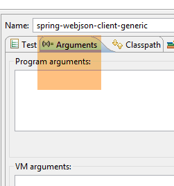
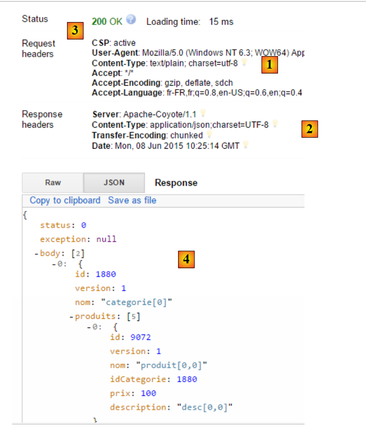
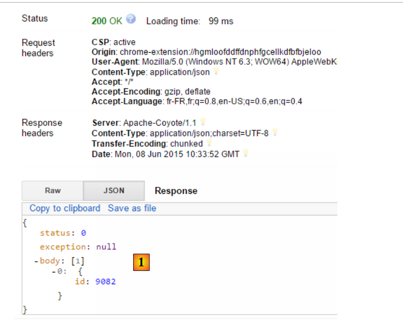
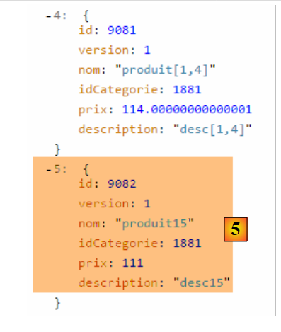
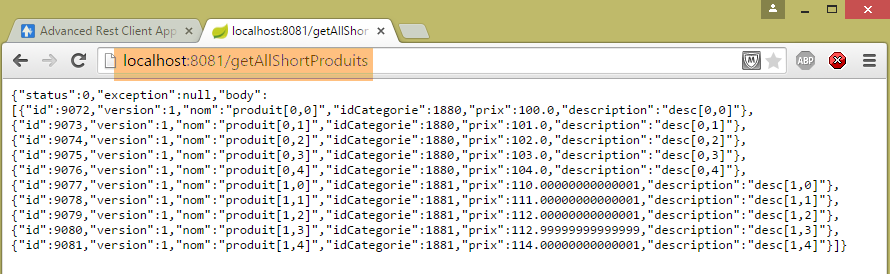

17. Expor uma base de dados na Web
17.1. Arquitetura do serviço web / jSON
Vamos implementar a seguinte arquitetura:
 |
- em [1], as camadas [DAO, [JPA], JDBC] são implementadas por uma das 24 configurações apresentadas nos capítulos anteriores e, em particular, no parágrafo 15;
- a camada [DAO] [3] do cliente remoto implementa a mesma interface que a camada [DAO] [1], o que nos permite utilizar a mesma camada de testes que nos capítulos anteriores. É como se as camadas [2-3] fossem transparentes para a camada [4];
Vamos basear-nos nos seguintes projetos:
- o projeto [sgbd-config-jdbc], que configura a camada JDBC de um dos seis SGBD;
- o projeto [sgbd-config-jpa-*], que configura a camada JPA do SGBD escolhido para uma das três implementações JPA analisadas (Hibernate, EclipseLink, OpenJpa);
- o projeto genérico [spring-jdbc-04], que implementa a camada [DAO] [1];
- o projeto genérico [spring-jpa-generic], que implementa a camada [DAO] e [2];
- o projeto genérico [spring-webjson-server-jdbc-generic], que implementa um serviço web baseado no projeto [spring-jdbc-04];
- o projeto genérico [spring-webjson-server-jpa-generic], que implementa um serviço web baseado no projeto [spring-jpa-generic];
- o cliente genérico [spring-webjson-client-generic], que será o único cliente das 24 configurações do serviço web;
17.2. Configuração do ambiente de trabalho
Vamos trabalhar com os seguintes elementos:
- SGBD MySQL 5.6.25;
- implementação JPA Hibernate;
Importe os seguintes projetos para o STS:
 |
- os projetos [spring-webjson-*] serão encontrados na pasta [<exemples>\spring-database-generic\spring-webjson];
- execute o [Alt-F5] e, em seguida, regenerar todos os projetos acima referidos;
Para verificar se o ambiente de trabalho foi instalado corretamente, proceda da seguinte forma:
- inicie o serviço web com a configuração de execução [spring-webjson-server-jpa-generic-hibernate], que se baseia numa implementação JPA / Hibernate;
 |  |
depois:
- inicie o cliente deste serviço web com a configuração de execução [spring-webjson-client-generic], que é um teste do JUnit:
 |  |
O teste deve ser bem-sucedido:
 |
- no [1], pare o serviço web e, em seguida, inicie o serviço web com a configuração de execução [spring-webjson-server-jdbc-generic], que se baseia numa implementação JDBC:
 |  |
e, em seguida, inicie o cliente deste serviço web com a configuração de execução [spring-webjson-client-generic]:
|
O teste deve ser bem-sucedido:
 |
17.3. Implementação do serviço web / jSON / JDBC
Em primeiro lugar, vamos analisar a seguinte arquitetura:
 |
onde a camada [DAO] [1] comunica diretamente com a camada JDBC do SGBD.
17.3.1. O projeto Eclipse do serviço web
O projeto Eclipse do serviço web / jSON / JDBC é o seguinte:
 |
Trata-se de um projeto Maven cujo ficheiro [pom.xml] é o seguinte:
<project xmlns="http://maven.apache.org/POM/4.0.0" xmlns:xsi="http://www.w3.org/2001/XMLSchema-instance"
xsi:schemaLocation="http://maven.apache.org/POM/4.0.0 http://maven.apache.org/xsd/maven-4.0.0.xsd">
<modelVersion>4.0.0</modelVersion>
<groupId>dvp.spring.database</groupId>
<artifactId>spring-webjson-server-jdbc-generic</artifactId>
<version>0.0.1-SNAPSHOT</version>
<name>spring-webjson-server-jdbc-generic</name>
<description>démo spring mvc</description>
<parent>
<groupId>org.springframework.boot</groupId>
<artifactId>spring-boot-starter-parent</artifactId>
<version>1.2.3.RELEASE</version>
</parent>
<dependencies>
<!-- camada web -->
<dependency>
<groupId>org.springframework.boot</groupId>
<artifactId>spring-boot-starter-web</artifactId>
</dependency>
<!-- camada [DAO] -->
<dependency>
<groupId>dvp.spring.database</groupId>
<artifactId>spring-jdbc-generic-04</artifactId>
<version>0.0.1-SNAPSHOT</version>
</dependency>
</dependencies>
<!-- plug-ins -->
<build>
<plugins>
<plugin>
<groupId>org.apache.maven.plugins</groupId>
<artifactId>maven-surefire-plugin</artifactId>
<version>2.18.1</version>
</plugin>
</plugins>
</build>
</project>
- linhas 11-15: o projeto Maven pai;
- linhas 24-28: a dependência da camada [DAO / JDBC] implementada pelo projeto [spring-jdbc-generic-04];
- linhas 19-22: a dependência do artefacto [spring-boot-starter-web]. Este artefacto traz consigo todas as dependências necessárias para a criação de um serviço web / jSON. Também traz bibliotecas desnecessárias. Seria, portanto, necessária uma configuração mais precisa, mas esta configuração é prática para começar.
As dependências incluídas nesta configuração são as seguintes:
 |  | 1  |
- no [1], verifica-se que o Eclipse detetou a dependência do arquivo do projeto [spring-jdbc-generic-04];
As dependências acima referem-se tanto à camada [DAO] como à camada [web].
17.3.2. Configuração da camada [web]
A camada [web] é configurada por dois ficheiros de configuração do Spring:
 |
17.3.2.1. A classe [WebConfig]
A principal função da classe [WebConfig] é configurar:
- o servidor Tomcat no qual o serviço web será implementado;
- os filtros jSON de serialização/deserialização dos objetos [Produit] e [Categorie]:
package spring.webjson.server.config;
import java.util.List;
import org.springframework.beans.factory.annotation.Autowired;
import org.springframework.beans.factory.config.ConfigurableBeanFactory;
import org.springframework.boot.context.embedded.EmbeddedServletContainerFactory;
import org.springframework.boot.context.embedded.ServletRegistrationBean;
import org.springframework.boot.context.embedded.tomcat.TomcatEmbeddedServletContainerFactory;
import org.springframework.context.ApplicationContext;
import org.springframework.context.annotation.Bean;
import org.springframework.context.annotation.Configuration;
import org.springframework.context.annotation.Scope;
import org.springframework.http.converter.HttpMessageConverter;
import org.springframework.http.converter.json.MappingJackson2HttpMessageConverter;
import org.springframework.web.context.WebApplicationContext;
import org.springframework.web.servlet.DispatcherServlet;
import org.springframework.web.servlet.config.annotation.EnableWebMvc;
import org.springframework.web.servlet.config.annotation.WebMvcConfigurerAdapter;
import com.fasterxml.jackson.databind.ObjectMapper;
import com.fasterxml.jackson.databind.ser.impl.SimpleBeanPropertyFilter;
import com.fasterxml.jackson.databind.ser.impl.SimpleFilterProvider;
@Configuration
@EnableWebMvc
public class WebConfig extends WebMvcConfigurerAdapter {
// -------------------------------- configuração da camada [web]
@Autowired
private ApplicationContext context;
@Bean
public DispatcherServlet dispatcherServlet() {
DispatcherServlet servlet=new DispatcherServlet((WebApplicationContext) context);
return servlet;
}
@Bean
public ServletRegistrationBean servletRegistrationBean(DispatcherServlet dispatcherServlet) {
return new ServletRegistrationBean(dispatcherServlet, "/*");
}
@Bean
public EmbeddedServletContainerFactory embeddedServletContainerFactory() {
return new TomcatEmbeddedServletContainerFactory("", 8081);
}
// -------------------------------- configuração de filtros [json]
...
}
- linha 25: a classe é uma classe de configuração do Spring;
- linha 26: a anotação [@EnableWebMvc] indica que a camada web está implementada com o Spring MVC. Isto irá provocar configurações implícitas que não teremos de efetuar;
- linhas 30-31: injeção do contexto Spring da aplicação;
- linhas 33-37: definição do bean [dispatcherServlet] que, nas aplicações Spring MVC, desempenha a função de [FrontController], cujo papel é encaminhar os pedidos dos clientes para o controlador capaz de os processar;
- linhas 39-42: o servlet do serviço web é registado, bem como os URL que este processa. Aqui foi escrito [/*], o que significa todos os URLs;
- linhas 44-47: definição do bean [embeddedServletContainerFactory], que define o servidor web a utilizar. Neste caso, será o servidor web Tomcat [http://tomcat.apache.org/]. Também é possível utilizar o servidor Jetty [http://www.eclipse.org/jetty/]. Ambos são servidores integrados nas dependências do Maven. Quando o [Spring Boot] controla o arranque do projeto, inicia automaticamente o servidor web indicado na configuração e implementa nele o serviço ou a aplicação web;
A configuração dos filtros jSON é feita da seguinte forma:
package spring.webjson.server.config;
import java.util.List;
...
@Configuration
@EnableWebMvc
public class WebConfig extends WebMvcConfigurerAdapter {
// -------------------------------- configuração da camada [web]
...
// -------------------------------- configuração de filtros [json]
// mapeamento jSON
@Bean
public MappingJackson2HttpMessageConverter mappingJackson2HttpMessageConverter() {
final MappingJackson2HttpMessageConverter converter = new MappingJackson2HttpMessageConverter();
final ObjectMapper objectMapper = new ObjectMapper();
converter.setObjectMapper(objectMapper);
return converter;
}
@Override
public void configureMessageConverters(List<HttpMessageConverter<?>> converters) {
converters.add(mappingJackson2HttpMessageConverter());
super.configureMessageConverters(converters);
}
// filtros jSON
@Bean
public ObjectMapper jsonMapper(MappingJackson2HttpMessageConverter mappingJackson2HttpMessageConverter) {
return mappingJackson2HttpMessageConverter.getObjectMapper();
}
@Bean
@Scope(value = ConfigurableBeanFactory.SCOPE_PROTOTYPE)
ObjectMapper jsonMapperShortCategorie(MappingJackson2HttpMessageConverter mappingJackson2HttpMessageConverter) {
ObjectMapper jsonMapper = jsonMapper(mappingJackson2HttpMessageConverter);
jsonMapper.setFilters(new SimpleFilterProvider().addFilter("jsonFilterCategorie",
SimpleBeanPropertyFilter.serializeAllExcept("produits")));
return jsonMapper;
}
@Bean
@Scope(value = ConfigurableBeanFactory.SCOPE_PROTOTYPE)
ObjectMapper jsonMapperLongCategorie(MappingJackson2HttpMessageConverter mappingJackson2HttpMessageConverter) {
ObjectMapper jsonMapper = jsonMapper(mappingJackson2HttpMessageConverter);
jsonMapper.setFilters(new SimpleFilterProvider().addFilter("jsonFilterCategorie",
SimpleBeanPropertyFilter.serializeAllExcept()).addFilter("jsonFilterProduit",
SimpleBeanPropertyFilter.serializeAllExcept("categorie")));
return jsonMapper;
}
@Bean
@Scope(value = ConfigurableBeanFactory.SCOPE_PROTOTYPE)
ObjectMapper jsonMapperShortProduit(MappingJackson2HttpMessageConverter mappingJackson2HttpMessageConverter) {
ObjectMapper jsonMapper = jsonMapper(mappingJackson2HttpMessageConverter);
jsonMapper.setFilters(new SimpleFilterProvider().addFilter("jsonFilterProduit",
SimpleBeanPropertyFilter.serializeAllExcept("categorie")));
return jsonMapper;
}
@Bean
@Scope(value = ConfigurableBeanFactory.SCOPE_PROTOTYPE)
ObjectMapper jsonMapperLongProduit(MappingJackson2HttpMessageConverter mappingJackson2HttpMessageConverter) {
ObjectMapper jsonMapper = jsonMapper(mappingJackson2HttpMessageConverter);
jsonMapper.setFilters(new SimpleFilterProvider().addFilter("jsonFilterProduit",
SimpleBeanPropertyFilter.serializeAllExcept()).addFilter("jsonFilterCategorie",
SimpleBeanPropertyFilter.serializeAllExcept("produits")));
return jsonMapper;
}
}
- linha 8: a classe [WebConfig] estende a classe [WebMvcConfigurerAdapter]. Esta última classe configura a aplicação web com valores por predefinição. Quando se pretende personalizar esta configuração, é necessário redefinir determinados métodos desta classe. Neste caso, pretendemos redefinir o método [configureMessageConverters] da classe [22-26] (repare na anotação @Override), que define uma lista de «conversores». O serviço web /jSON e o seu cliente trocam linhas de texto. Um conversor é uma ferramenta capaz de criar um objeto a partir de uma linha de texto recebida (desserialização) e de criar uma linha de texto a partir de um objeto (serialização). Aqui, as linhas de texto serão cadeias jSON. Falaremos, portanto, de serialização/desserialização jSON;
- linha 23: o método [configureMessageConverters] recebe como parâmetro uma lista de conversores;
- linhas 24-25: o conversor jSON [MappingJackson2HttpMessageConverter] das linhas [14-20] é adicionado a esta lista. Isto permitirá as trocas jSON entre o cliente e o servidor;
- linhas [14-20]: definem um conversor jSON implementado pela classe [MappingJackson2HttpMessageConverter]. Esta classe (linha 10) pode ser encontrada nas dependências Maven do projeto;
- linhas [17-18]: é criado um mapeador jSON e atribuído ao conversor [MappingJackson2HttpMessageConverter];
- linhas [29-32]: definem o mapeador jSON, criado na linha 17, como um bean Spring. Isto coloca-o no contexto Spring e torna-o disponível para ser injetado noutros beans ou para ser utilizado no código da aplicação web;
- linhas 34-41: definem um filtro jSON para o mapeador jSON anterior;
- linha 35: a anotação [@Scope(value = ConfigurableBeanFactory.SCOPE_PROTOTYPE)] faz com que o bean aqui definido não seja um singleton. Sempre que for solicitado ao contexto, o método [jsonMapperCategorieWithoutProduits] será reexecutado. Isto é necessário aqui porque definimos quatro filtros jSON. No entanto, apenas um deve estar ativo num determinado momento. Ao atribuir ao bean o âmbito [ConfigurableBeanFactory.SCOPE_PROTOTYPE], garantimos que o método será reexecutado e que o filtro anterior será substituído pelo novo;
- para compreender estes filtros, é preciso lembrar que, na camada [DAO]:
- a entidade [Produit] foi decorada com a anotação [jsonFilterProduit];
- a entidade [Categorie] foi decorada com a anotação [jsonFilterCategorie];
É, portanto, necessário definir filtros com esses nomes.
- linhas [34-41]: definem um filtro denominado [jsonMapperShortCategorie] que permite obter a representação jSON de uma categoria sem os seus produtos;
- linhas [43-51]: definem um filtro denominado [jsonMapperLongCategorie] que permite obter a representação jSON de uma categoria com os seus produtos;
- linhas [53-60]: definem um filtro denominado [jsonMapperShortProduit] que permite obter a representação jSON de um produto sem a sua categoria;
- linhas [62-70]: definem um filtro denominado [jsonMapperLongProduit] que permite obter a representação jSON de um produto com a sua categoria;
17.3.2.2. A classe [AppConfig]
A classe [AppConfig] configura toda a aplicação, ou seja, as camadas [web] e [DAO]:
package spring.webjson.server.config;
import org.springframework.context.annotation.ComponentScan;
import org.springframework.context.annotation.Configuration;
import org.springframework.context.annotation.Import;
@Configuration
@ComponentScan(basePackages = { "spring.webjson.server.service" })
@Import({ spring.jdbc.config.AppConfig.class, WebConfig.class })
public class AppConfig {
}
- linha 7: a classe é uma classe de configuração do Spring;
- linha 9: importam-se os beans da camada [DAO / JDBC], bem como os definidos pela classe [WebConfig]. Todos os beans da camada [DAO] estarão, portanto, disponíveis na aplicação web / jSON;
- linha 8: indica em que pacotes se encontram outros beans Spring;
17.3.3. A exceção [ServerException]
 |
Tal como nos capítulos anteriores, a camada [DAO] lançava uma exceção não controlada [DaoException]; a camada [web] lançará uma exceção não controlada [ServerException]:
package spring.webjson.server.infrastructure;
import generic.jdbc.infrastructure.UncheckedException;
public class ServerException extends UncheckedException {
private static final long serialVersionUID = 1L;
// fabricantes
public ServerException() {
super();
}
public ServerException(int code, Throwable e, String simpleClassName) {
super(code, e, simpleClassName);
}
}
- linha 5: a classe [ServerException] estende a classe [UncheckedException] definida no projeto que configura a camada JDBC (linha 3);
17.3.4. Os controladores
 |
 |
Teremos aqui dois controladores:
- O [CategorieController] controlará as consultas sobre as categorias;
- [CategorieController] controlará as solicitações relativas aos produtos;
Os URL expostos pelos controladores correspondem, um a um, aos métodos das interfaces [DaoCategorie] e [DaoProduit] da camada [DAO]:
 |  |
Assim, conforme acima:
- o método web [deleteAllCategories] chamará o método [deleteAllEntities] da classe [DaoCategorie];
- o método web [getShortCategoriesById] irá chamar o método [getShortEntitiesById] da classe [DaoCategorie];
O mesmo se aplica aos produtos:
 |  |
17.3.4.1. Os URL expostos pelo controlador [CategorieController]
| |
| |
| |
| |
| |
| |
| |
| |
| |
| |
17.3.4.2. Os URL apresentados pelo controlador [ProduitController]
| |
| |
| |
| |
| |
| |
| |
| |
| |
| |
17.3.5. Implementação genérica do serviço web
 |
A lista de URL exposta pelo serviço web mostra que são oferecidos os mesmos tipos de URL para gerir as categorias e os produtos. Em vez de escrever dois controladores muito semelhantes, vamos fazê-los derivar de uma classe que realizará todo o trabalho comum aos dois controladores. Será a classe [AbstractController] acima referida. Esta classe implementará a seguinte interface [Iws]:
package spring.webjson.server.service;
import java.util.List;
import javax.servlet.http.HttpServletRequest;
import spring.jdbc.entities.AbstractCoreEntity;
public interface Iws<T extends AbstractCoreEntity> {
// lista de todas as entidades T
public Response<List<T>> getAllShortEntities();
public Response<List<T>> getAllLongEntities();
// de entidades específicas - versão curta
public Response<List<T>> getShortEntitiesById(HttpServletRequest request);
public Response<List<T>> getShortEntitiesByName(HttpServletRequest request);
// de entidades específicas - versão longa
public Response<List<T>> getLongEntitiesById(HttpServletRequest request);
public Response<List<T>> getLongEntitiesByName(HttpServletRequest request);
// atualização de várias entidades
public Response<List<T>> saveEntities(HttpServletRequest request);
// eliminação de todas as entidades
public Response<Void> deleteAllEntities();
// eliminação de várias entidades
public Response<Void> deleteEntitiesById(HttpServletRequest request);
public Response<Void> deleteEntitiesByName(HttpServletRequest request);
}
Esta interface retoma os métodos da interface da camada [DAO] que será utilizada:
package spring.jdbc.dao;
import java.util.List;
import spring.jdbc.entities.AbstractCoreEntity;
public interface IDao<T extends AbstractCoreEntity> {
// lista de todas as entidades T
public List<T> getAllShortEntities();
public List<T> getAllLongEntities();
// de entidades específicas - versão curta
public List<T> getShortEntitiesById(Iterable<Long> ids);
public List<T> getShortEntitiesById(Long... ids);
public List<T> getShortEntitiesByName(Iterable<String> names);
public List<T> getShortEntitiesByName(String... names);
// de entidades específicas - versão longa
public List<T> getLongEntitiesById(Iterable<Long> ids);
public List<T> getLongEntitiesById(Long... ids);
public List<T> getLongEntitiesByName(Iterable<String> names);
public List<T> getLongEntitiesByName(String... names);
// atualização de várias entidades
public List<T> saveEntities(Iterable<T> entities);
public List<T> saveEntities(@SuppressWarnings("unchecked") T... entities);
// eliminação de todas as entidades
public void deleteAllEntities();
// eliminação de várias entidades
public void deleteEntitiesById(Iterable<Long> ids);
public void deleteEntitiesById(Long... ids);
public void deleteEntitiesByName(Iterable<String> names);
public void deleteEntitiesByName(String... names);
public void deleteEntitiesByEntity(Iterable<T> entities);
public void deleteEntitiesByEntity(@SuppressWarnings("unchecked") T... entities);
}
A transição da interface [IDao<T>] da camada [DAO] para a interface [Iws<T>] do serviço web obedeceu às seguintes regras:
- os métodos da interface [Iws<T>] não irão lançar nenhuma exceção. Caso ocorra uma exceção, esta será encapsulada no objeto [Response];
- as variantes dos parâmetros, tais como as linhas 45 e 47 do [Iterable<String> names, String... names], desaparecem. Os métodos obtêm os seus parâmetros na solicitação HTTP do cliente do tipo [HttpServletRequest request];
Todas as respostas do serviço web serão encapsuladas no seguinte objeto [Response]:
 |
package spring.webjson.server.service;
public class Response<T> {
// ----------------- propriedades
// estado da operação
private int status;
// uma mensagem de erro
private String exception;
// o corpo da resposta
private T body;
// construtores
public Response() {
}
public Response(int status, String exception, T body) {
this.status = status;
this.exception = exception;
this.body = body;
}
// getters e setters
...
}
- linha 4: a resposta encapsula um tipo T;
- linha 12: a resposta do tipo T;
- linhas 7-10: é possível que um método encontre uma exceção. Nesse caso, devolverá uma resposta com:
- linha 8: status!=0;
- linha 10: uma mensagem de erro;
A classe [AbstractController] é a seguinte:
package spring.webjson.server.service;
import java.util.List;
import javax.annotation.PostConstruct;
import javax.servlet.http.HttpServletRequest;
import org.springframework.beans.factory.annotation.Autowired;
import org.springframework.context.ApplicationContext;
import spring.jdbc.dao.IDao;
import spring.jdbc.entities.AbstractCoreEntity;
import spring.jdbc.infrastructure.DaoException;
import spring.webjson.server.infrastructure.ServerException;
import com.fasterxml.jackson.core.type.TypeReference;
import com.fasterxml.jackson.databind.ObjectMapper;
import com.google.common.io.CharStreams;
public abstract class AbstractController<T extends AbstractCoreEntity> implements Iws<T> {
@Autowired
protected ApplicationContext context;
// camada DAO
private IDao<T> dao;
abstract protected IDao<T> getDao();
// local
private String simpleClassName = getClass().getSimpleName();
@PostConstruct
public void init(){
dao=getDao();
}
@Override
public Response<List<T>> getAllShortEntities() {
try {
// resposta
return new Response<List<T>>(0, null, dao.getAllShortEntities());
} catch (DaoException e) {
return new Response<List<T>>(1, e.toString(), null);
} catch (Exception e) {
return new Response<List<T>>(2, new ServerException(1007, e, simpleClassName).toString(), null);
}
}
@Override
public Response<List<T>> getAllLongEntities() {
try {
// resposta
return new Response<List<T>>(0, null, dao.getAllLongEntities());
} catch (DaoException e) {
return new Response<List<T>>(1, e.toString(), null);
} catch (Exception e) {
return new Response<List<T>>(2, new ServerException(1008, e, simpleClassName).toString(), null);
}
}
@Override
public Response<List<T>> getShortEntitiesById(HttpServletRequest request) {
...
}
@Override
public Response<List<T>> getShortEntitiesByName(HttpServletRequest request) {
...
}
@Override
public Response<List<T>> getLongEntitiesById(HttpServletRequest request) {
...
}
@Override
public Response<List<T>> getLongEntitiesByName(HttpServletRequest request) {
...
}
@Override
public Response<List<T>> saveEntities(HttpServletRequest request) {
return new Response<List<T>>(2, new ServerException(1013, new RuntimeException("[saveEntities] not implemented"), simpleClassName).toString(), null);
}
@Override
public Response<Void> deleteAllEntities() {
try {
// a ser eliminado
dao.deleteAllEntities();
// resposta
return new Response<Void>(0, null, null);
} catch (DaoException e) {
return new Response<Void>(1, e.toString(), null);
} catch (Exception e) {
return new Response<Void>(2, new ServerException(1014, e, simpleClassName).toString(), null);
}
}
@Override
public Response<Void> deleteEntitiesById(HttpServletRequest request) {
...
}
@Override
public Response<Void> deleteEntitiesByName(HttpServletRequest request) {
...
}
}
Todos os métodos são implementados da mesma forma:
- se necessitarem de informações, obtêm-nas no objeto [HttpServletRequest request];
- chamam o método da camada [DAO] que tem o mesmo nome que elas;
- gerem as exceções que possam ocorrer, quer na operação 1 de recuperação dos parâmetros, quer na operação 2 de chamada à camada [DAO];
Vamos analisar, em primeiro lugar, como é que a camada [DAO] é inserida na classe [AbstractController]:
public abstract class AbstractController<T extends AbstractCoreEntity> implements Iws<T> {
@Autowired
protected ApplicationContext context;
// camada DAO
private IDao<T> dao;
abstract protected IDao<T> getDao();
@PostConstruct
public void init(){
dao=getDao();
}
- linha 1: a classe é abstrata e implementa a interface genérica [Iws<T>];
- linhas 3-4: injeção do contexto Spring;
- linha 7: a referência ainda desconhecida da camada [DAO] a utilizar;
- linha 9: o método abstrato [getDao] que irá devolver a referência da camada [DAO] a utilizar. Este método será redefinido pela classe filha e, por isso, será a classe filha a indicar qual a camada [DAO] a utilizar (DaoProduit ou DaoCategorie);
- linha 11: a anotação [@PostConstruct] indica um método a ser executado quando a instanciação do objeto estiver concluída. Quando esta instanciação estiver concluída, as injeções do Spring já terão sido efetuadas. A classe filha terá então obtido a referência à sua camada [DAO] e poderá, assim, transmiti-la à sua classe pai;
O método [getShortEntitiesById] é o seguinte:
@Override
public Response<List<T>> getShortEntitiesById(HttpServletRequest request) {
try {
// recupera-se o valor enviado
String body = CharStreams.toString(request.getReader());
// deserializa-se
ObjectMapper mapper = context.getBean("jsonMapper", ObjectMapper.class);
List<Long> ids = mapper.readValue(body, new TypeReference<List<Long>>() {
});
// resposta
return new Response<List<T>>(0, null, dao.getShortEntitiesById(ids));
} catch (DaoException e) {
return new Response<List<T>>(1, e.toString(), null);
} catch (Exception e) {
return new Response<List<T>>(2, new ServerException(1009, e, simpleClassName).toString(), null);
}
}
- linha 5: o valor enviado pelo cliente será uma cadeia jSON. É aqui que é recuperado;
- linhas 7-9: a cadeia jSON contém a lista das chaves primárias das entidades cuja versão curta se pretende obter;
- linha 11: é chamado o método [DAO] com o mesmo nome. A resposta do tipo [List<T>] é encapsulada num objeto [Response];
- linha 13: caso em que a camada [DAO] tenha lançado uma exceção;
- linha 15: caso de outras exceções, em particular a possível exceção na deserialização do parâmetro jSON, linha 8;
O método [getShortEntitiesByName] é semelhante:
@Override
public Response<List<T>> getShortEntitiesByName(HttpServletRequest request) {
try {
// recupera-se o valor enviado
String body = CharStreams.toString(request.getReader());
// deserializa-se
ObjectMapper mapper = context.getBean("jsonMapper", ObjectMapper.class);
List<String> noms = mapper.readValue(body, new TypeReference<List<String>>() {
});
// resposta
return new Response<List<T>>(0, null, dao.getShortEntitiesByName(noms));
} catch (DaoException e) {
return new Response<List<T>>(1, e.toString(), null);
} catch (Exception e) {
return new Response<List<T>>(2, new ServerException(1010, e, simpleClassName).toString(), null);
}
}
- linhas 4-9: aqui, o parâmetro jSON é a lista dos nomes das categorias cuja versão abreviada se pretende obter;
O método [saveEntities] não foi implementado porque depende bastante da natureza da entidade a persistir, [Categorie] ou [Produit]. Há pouco código para fatorizar. Este trabalho é, portanto, deixado para as classes filhas.
@Override
public Response<List<T>> saveEntities(HttpServletRequest request) {
return new Response<List<T>>(2, new ServerException(1013, new RuntimeException("[saveEntities] not implemented"), simpleClassName).toString(), null);
}
17.3.6. O controlador [CategorieController]
 |
O controlador [CategorieController] gere o processamento dos URL relativos às categorias:
package spring.webjson.server.service;
import java.util.ArrayList;
import java.util.List;
import javax.servlet.http.HttpServletRequest;
import org.springframework.beans.factory.annotation.Autowired;
import org.springframework.web.bind.annotation.RequestMapping;
import org.springframework.web.bind.annotation.RequestMethod;
import org.springframework.web.bind.annotation.RestController;
import spring.jdbc.dao.IDao;
import spring.jdbc.entities.Categorie;
import spring.jdbc.entities.Produit;
import spring.jdbc.infrastructure.DaoException;
import spring.webjson.server.entities.CoreCategorie;
import spring.webjson.server.entities.CoreProduit;
import spring.webjson.server.infrastructure.ServerException;
import com.fasterxml.jackson.core.type.TypeReference;
import com.fasterxml.jackson.databind.ObjectMapper;
import com.google.common.io.CharStreams;
@RestController
public class CategorieController extends AbstractController<Categorie> {
@Autowired
private IDao<Categorie> daoCategorie;
@Override
protected IDao<Categorie> getDao() {
return daoCategorie;
}
// local
private String simpleClassName = getClass().getSimpleName();
@RequestMapping(value = "/getAllShortCategories", method = RequestMethod.GET)
public Response<List<Categorie>> getAllShortCategories() {
// pai
Response<List<Categorie>> response = super.getAllShortEntities();
// filtros de serialização jSON
context.getBean("jsonMapperShortCategorie", ObjectMapper.class);
// resposta
return response;
}
@RequestMapping(value = "/getAllLongCategories", method = RequestMethod.GET)
public Response<List<Categorie>> getAllLongCategories() {
// pai
Response<List<Categorie>> response = super.getAllLongEntities();
// filtros de serialização jSON
context.getBean("jsonMapperLongCategorie", ObjectMapper.class);
// resposta
return response;
}
@RequestMapping(value = "/getShortCategoriesById", method = RequestMethod.POST)
public Response<List<Categorie>> getShortCategoriesById(HttpServletRequest request) {
// pai
Response<List<Categorie>> response = super.getShortEntitiesById(request);
// filtros de serialização jSON
context.getBean("jsonMapperShortCategorie", ObjectMapper.class);
// resposta
return response;
}
@RequestMapping(value = "/getShortCategoriesByName", method = RequestMethod.POST)
public Response<List<Categorie>> getShortCategoriesByName(HttpServletRequest request) {
// pai
Response<List<Categorie>> response = super.getShortEntitiesByName(request);
// filtros de serialização jSON
context.getBean("jsonMapperShortCategorie", ObjectMapper.class);
// resposta
return response;
}
@RequestMapping(value = "/getLongCategoriesById", method = RequestMethod.POST)
public Response<List<Categorie>> getLongCategoriesById(HttpServletRequest request) {
// pai
Response<List<Categorie>> response = super.getLongEntitiesById(request);
// filtros de serialização jSON
context.getBean("jsonMapperLongCategorie", ObjectMapper.class);
// resposta
return response;
}
@RequestMapping(value = "/getLongCategoriesByName", method = RequestMethod.POST)
public Response<List<Categorie>> getLongCategoriesByName(HttpServletRequest request) {
// pai
Response<List<Categorie>> response = super.getLongEntitiesByName(request);
// filtros de serialização jSON
context.getBean("jsonMapperLongCategorie", ObjectMapper.class);
// resposta
return response;
}
@RequestMapping(value = "/saveCategories", method = RequestMethod.POST, consumes = "application/json; charset=UTF-8")
public Response<List<CoreCategorie>> saveCategories(HttpServletRequest request) {
...
}
@RequestMapping(value = "/deleteAllCategories", method = RequestMethod.GET)
public Response<Void> deleteAllCategories() {
return super.deleteAllEntities();
}
@RequestMapping(value = "/deleteCategoriesById", method = RequestMethod.POST, consumes = "application/json; charset=UTF-8")
public Response<Void> deleteCategoriesById(HttpServletRequest request) {
return super.deleteEntitiesById(request);
}
@RequestMapping(value = "/deleteCategoriesByName", method = RequestMethod.POST, consumes = "application/json; charset=UTF-8")
public Response<Void> deleteCategoriesByName(HttpServletRequest request) {
return super.deleteEntitiesByName(request);
}
}
- linha 26: a classe [CategorieController] estende a classe [AbstractController];
- linha 25: a anotação [@RestController] transforma a classe num componente Spring. Esta anotação indica ainda que a classe é um serviço web cujos métodos enviam diretamente a sua resposta ao cliente no formato jSON;
- linhas 28-29: a referência da camada [DAO] é injetada aqui;
- linhas 31-34: redefinição do método [getDao], declarado como abstrato na classe pai, cujo objetivo é devolver uma referência à camada [DAO] a utilizar;
Todos os métodos seguem o mesmo modelo:
- delegação do processamento à classe pai;
- inicialização do mapeador jSON, que irá proceder à serialização da resposta;
- envio da resposta;
Vejamos a assinatura de alguns URL:
| - o URL [/getAllShortCategories] é chamado com um GET |
| - a função URL [/getShortCategoriesById] é chamada com uma função POST. O valor lançado é a cadeia jSON das chaves primárias das categorias pretendidas; |
| - a função URL [/getLongCategoriesByName] é chamada com um POST. O valor inserido é a cadeia jSON com os nomes das categorias pretendidas; |
Agora, vamos detalhar o método [saveCategories], que não segue o formato dos outros métodos:
@RequestMapping(value = "/saveCategories", method = RequestMethod.POST, consumes = "application/json; charset=UTF-8")
public Response<List<CoreCategorie>> saveCategories(HttpServletRequest request) {
// as categorias são mantidas
try {
// recupera-se o valor enviado
String body = CharStreams.toString(request.getReader());
// deserializa-se
ObjectMapper mapper = context.getBean("jsonMapperLongCategorie", ObjectMapper.class);
List<Categorie> categories = mapper.readValue(body, new TypeReference<List<Categorie>>() {
});
// persistimos as categorias
categories = daoCategorie.saveEntities(categories);
// retorna-se o resultado
List<CoreCategorie> coreCategories = new ArrayList<CoreCategorie>();
for (Categorie categorie : categories) {
CoreCategorie coreCategorie = new CoreCategorie(categorie.getId());
coreCategories.add(coreCategorie);
List<Produit> produits = categorie.getProduits();
if (produits != null) {
List<CoreProduit> coreProduits = new ArrayList<CoreProduit>();
for (Produit produit : categorie.getProduits()) {
coreProduits.add(new CoreProduit(produit.getId()));
}
coreCategorie.setCoreProduits(coreProduits);
}
}
// resultado
return new Response<List<CoreCategorie>>(0, null, coreCategories);
} catch (DaoException e) {
return new Response<List<CoreCategorie>>(1, e.toString(), null);
} catch (Exception e) {
return new Response<List<CoreCategorie>>(2, new ServerException(1020, e, simpleClassName).toString(), null);
}
}
- linha 1: a sequência URL [/saveCategories] é acompanhada por um valor enviado. Este é a cadeia jSON das versões completas das categorias a serem mantidas;
- linhas 5-10: as categorias a serem mantidas são recriadas a partir da cadeia jSON. O link [produit.categorie] que liga um [Produit] ao seu [Catégorie] tem o valor null, pois na versão longa de um [Categorie], cada [Produit] está, por sua vez, na sua versão curta, sem o seu campo [categorie]. Isto não constitui um problema, uma vez que a camada [DAO] implementada com JDBC não necessita dessa informação;
- linha 12: as categorias são persistidas. A lista de categorias recebida foi enriquecida com as chaves primárias dos elementos persistidos, categorias e produtos. Nada mais mudou. Em vez de devolver toda a lista recebida, o que tem um custo, vamos devolver apenas as chaves primárias dos elementos dessa lista. Para isso, utilizamos as seguintes classes [CoreCategorie] e [CoreProduit]:
 |
package spring.webjson.server.entities;
import java.util.List;
public class CoreCategorie {
// chave primária
private Long id;
// fabricantes
public CoreCategorie() {
}
public CoreCategorie(Long id) {
this.id=id;
}
// lista de produtos
private List<CoreProduit> coreProduits;
// getters e setters
...
}
- linha 8: a chave primária de um produto;
- linha 20: as chaves primárias dos seus produtos;
package spring.webjson.server.entities;
public class CoreProduit {
// chave primária
private Long id;
// construtores
public CoreProduit() {
}
public CoreProduit(Long id) {
this.id = id;
}
// getters e setters
...
}
- linha 6: a chave primária de um produto;
Voltemos ao código do método [saveCategories]:
...
// persistência das categorias
categories = daoCategorie.saveEntities(categories);
// retornamos o resultado
List<CoreCategorie> coreCategories = new ArrayList<CoreCategorie>();
for (Categorie categorie : categories) {
CoreCategorie coreCategorie = new CoreCategorie(categorie.getId());
coreCategories.add(coreCategorie);
List<Produit> produits = categorie.getProduits();
if (produits != null) {
List<CoreProduit> coreProduits = new ArrayList<CoreProduit>();
for (Produit produit : categorie.getProduits()) {
coreProduits.add(new CoreProduit(produit.getId()));
}
coreCategorie.setCoreProduits(coreProduits);
}
}
// resultado
return new Response<List<CoreCategorie>>(0, null, coreCategories);
...
- linhas 5-17: constrói-se a lista de [CoreCategorie] que será devolvida ao cliente remoto;
- linha 19: a resposta é devolvida e serializada em jSON;
17.3.7. Gestão dos filtros jSON
Para cada método de um controlador, existem dois momentos para a serialização/deserialização jSON:
- a deserialização do valor inserido: é aqui gerida explicitamente;
- a serialização do resultado: é aqui gerida implicitamente;
Comecemos pela deserialização do valor inserido em [CategorieController.saveCategories]:
@RequestMapping(value = "/saveCategories", method = RequestMethod.POST, consumes = "application/json; charset=UTF-8")
public Response<List<CoreCategorie>> saveCategories(HttpServletRequest request) {
// persistência das categorias
try {
// recuperar o valor enviado
String body = CharStreams.toString(request.getReader());
// deserializa-se
ObjectMapper mapper = context.getBean("jsonMapperLongCategorie", ObjectMapper.class);
List<Categorie> categories = mapper.readValue(body, new TypeReference<List<Categorie>>() {
});
- linha 8: no contexto Spring, recupera-se um mapeador configurado para gerir o filtro jSON [jsonMapperLongCategorie]. Voltemos à definição deste mapeador na classe de configuração [WebConfig]:
// -------------------------------- configuração de filtros [json]
// mapeamento jSON
@Bean
public MappingJackson2HttpMessageConverter mappingJackson2HttpMessageConverter() {
final MappingJackson2HttpMessageConverter converter = new MappingJackson2HttpMessageConverter();
final ObjectMapper objectMapper = new ObjectMapper();
converter.setObjectMapper(objectMapper);
return converter;
}
@Override
public void configureMessageConverters(List<HttpMessageConverter<?>> converters) {
converters.add(mappingJackson2HttpMessageConverter());
super.configureMessageConverters(converters);
}
// filtros jSON
@Bean
public ObjectMapper jsonMapper(MappingJackson2HttpMessageConverter mappingJackson2HttpMessageConverter) {
return mappingJackson2HttpMessageConverter.getObjectMapper();
}
@Bean
@Scope(value = ConfigurableBeanFactory.SCOPE_PROTOTYPE)
ObjectMapper jsonMapperShortCategorie(MappingJackson2HttpMessageConverter mappingJackson2HttpMessageConverter) {
ObjectMapper jsonMapper = jsonMapper(mappingJackson2HttpMessageConverter);
jsonMapper.setFilters(new SimpleFilterProvider().addFilter("jsonFilterCategorie",
SimpleBeanPropertyFilter.serializeAllExcept("produits")));
return jsonMapper;
}
@Bean
@Scope(value = ConfigurableBeanFactory.SCOPE_PROTOTYPE)
ObjectMapper jsonMapperLongCategorie(MappingJackson2HttpMessageConverter mappingJackson2HttpMessageConverter) {
ObjectMapper jsonMapper = jsonMapper(mappingJackson2HttpMessageConverter);
jsonMapper.setFilters(new SimpleFilterProvider().addFilter("jsonFilterCategorie",
SimpleBeanPropertyFilter.serializeAllExcept()).addFilter("jsonFilterProduit",
SimpleBeanPropertyFilter.serializeAllExcept("categorie")));
return jsonMapper;
}
- linhas 32-40: o mapeador jSON [jsonMapperLongCategorie] recuperado pela classe [CategorieController];
- linha 35: este mapeador é devolvido pelo método [jsonMapper] das linhas 18-21;
- linhas 18-21: o método [jsonMapper] devolve o mapeador jSON do conversor [MappingJackson2HttpMessageConverter] das linhas 3-9;
Por outras palavras, o mapeador jSON recuperado pela linha 4 abaixo em [CategorieController.saveCategories]:
// recupera-se o valor enviado
String body = CharStreams.toString(request.getReader());
// deserializa-se
ObjectMapper mapper = context.getBean("jsonMapperLongCategorie", ObjectMapper.class);
List<Categorie> categories = mapper.readValue(body, new TypeReference<List<Categorie>>() {
});
é o conversor utilizado por predefinição pelo Spring MVC para deserializar o valor enviado pelo cliente e serializar o resultado que lhe é enviado. Nas linhas acima, não houve deserialização implícita do valor enviado. Para tal, teria sido necessário escrever:
@RequestMapping(value = "/saveCategories", method = RequestMethod.POST, consumes = "application/json; charset=UTF-8")
public Response<List<CoreCategorie>> saveCategories(@RequestBody List<Categorie> categories) {
Neste caso, teria ocorrido uma deserialização automática do valor enviado no parâmetro [categories]. No entanto, havia o problema do filtro [jsonFilterCategorie] associado às entidades [Categorie]. É necessário configurá-lo. É por isso que optámos por uma deserialização explícita (linhas 4-5). O segundo ponto a ter em conta é que o mapeador da linha 4 (que é o utilizado por predefinição pelo Spring MVC) também é adequado para a serialização do resultado [Response<List<CoreCategorie>]. Com efeito, a entidade [CoreCategorie] não possui um filtro jSON. Não há, portanto, necessidade de configurar o mapeador jSON obtido com um filtro adicional. Nesse caso, haverá uma serialização implícita da resposta enviada ao cliente.
17.3.8. O controlador [ProduitController]
 |
O controlador [ProduitController] gere o processamento dos URL relativos aos produtos. O seu código é análogo ao do controlador [CategorieController]:
package spring.webjson.server.service;
import java.util.ArrayList;
import java.util.List;
import javax.servlet.http.HttpServletRequest;
import org.springframework.beans.factory.annotation.Autowired;
import org.springframework.web.bind.annotation.RequestMapping;
import org.springframework.web.bind.annotation.RequestMethod;
import org.springframework.web.bind.annotation.RestController;
import spring.jdbc.dao.IDao;
import spring.jdbc.entities.Produit;
import spring.jdbc.infrastructure.DaoException;
import spring.webjson.server.entities.CoreProduit;
import spring.webjson.server.infrastructure.ServerException;
import com.fasterxml.jackson.core.type.TypeReference;
import com.fasterxml.jackson.databind.ObjectMapper;
import com.google.common.io.CharStreams;
@RestController
public class ProduitController extends AbstractController<Produit> {
@Autowired
private IDao<Produit> daoProduit;
@Override
protected IDao<Produit> getDao() {
return daoProduit;
}
// local
private String simpleClassName = getClass().getSimpleName();
@RequestMapping(value = "/getAllShortProduits", method = RequestMethod.GET)
public Response<List<Produit>> getAllShortProduits() {
// pai
Response<List<Produit>> response = super.getAllShortEntities();
// filtros de serialização jSON
context.getBean("jsonMapperShortProduit", ObjectMapper.class);
// resposta
return response;
}
@RequestMapping(value = "/getAllLongProduits", method = RequestMethod.GET)
public Response<List<Produit>> getAllLongProduits() {
// pai
Response<List<Produit>> response = super.getAllLongEntities();
// filtros de serialização jSON
context.getBean("jsonMapperLongProduit", ObjectMapper.class);
// resposta
return response;
}
@RequestMapping(value = "/getShortProduitsById", method = RequestMethod.POST, consumes = "application/json; charset=UTF-8")
public Response<List<Produit>> getShortProduitsById(HttpServletRequest request) {
// pai
Response<List<Produit>> response = super.getShortEntitiesById(request);
// filtros de serialização jSON
context.getBean("jsonMapperShortProduit", ObjectMapper.class);
// resposta
return response;
}
@RequestMapping(value = "/getShortProduitsByName", method = RequestMethod.POST, consumes = "application/json; charset=UTF-8")
public Response<List<Produit>> getShortProduitsByName(HttpServletRequest request) {
// pai
Response<List<Produit>> response = super.getShortEntitiesByName(request);
// filtros de serialização jSON
context.getBean("jsonMapperShortProduit", ObjectMapper.class);
// resposta
return response;
}
@RequestMapping(value = "/getLongProduitsById", method = RequestMethod.POST, consumes = "application/json; charset=UTF-8")
public Response<List<Produit>> getLongProduitsById(HttpServletRequest request) {
// pai
Response<List<Produit>> response = super.getLongEntitiesById(request);
// filtros de serialização jSON
context.getBean("jsonMapperLongProduit", ObjectMapper.class);
// resposta
return response;
}
@RequestMapping(value = "/getLongProduitsByName", method = RequestMethod.POST, consumes = "application/json; charset=UTF-8")
public Response<List<Produit>> getLongProduitsByName(HttpServletRequest request) {
// pai
Response<List<Produit>> response = super.getLongEntitiesByName(request);
// filtros de serialização jSON
context.getBean("jsonMapperLongProduit", ObjectMapper.class);
// resposta
return response;
}
@RequestMapping(value = "/saveProduits", method = RequestMethod.POST, consumes = "application/json; charset=UTF-8")
public Response<List<CoreProduit>> saveProduits(HttpServletRequest request) {
...
}
@RequestMapping(value = "/deleteAllProduits", method = RequestMethod.GET)
public Response<Void> deleteAllProduits() {
return super.deleteAllEntities();
}
@RequestMapping(value = "/deleteProduitsById", method = RequestMethod.POST, consumes = "application/json; charset=UTF-8")
public Response<Void> deleteProduitsById(HttpServletRequest request) {
return super.deleteEntitiesById(request);
}
@RequestMapping(value = "/deleteProduitsByName", method = RequestMethod.POST, consumes = "application/json; charset=UTF-8")
public Response<Void> deleteProduitsByName(HttpServletRequest request) {
return super.deleteEntitiesByName(request);
}
}
Apenas o método [saveProduits] apresenta uma estrutura diferente dos outros métodos:
@RequestMapping(value = "/saveProduits", method = RequestMethod.POST, consumes = "application/json; charset=UTF-8")
public Response<List<CoreProduit>> saveProduits(HttpServletRequest request) {
try {
// recupera-se o valor enviado
String body = CharStreams.toString(request.getReader());
// deserializa-se
ObjectMapper mapper = context.getBean("jsonMapperShortProduit", ObjectMapper.class);
List<Produit> produits = mapper.readValue(body, new TypeReference<List<Produit>>() {
});
// os produtos são guardados
produits = daoProduit.saveEntities(produits);
List<CoreProduit> coreProduits = new ArrayList<CoreProduit>();
for (Produit produit : produits) {
coreProduits.add(new CoreProduit(produit.getId()));
}
// retornamos a resposta
return new Response<List<CoreProduit>>(0, null, coreProduits);
} catch (DaoException e) {
return new Response<List<CoreProduit>>(1, e.toString(), null);
} catch (Exception e) {
return new Response<List<CoreProduit>>(2, new ServerException(1021, e, simpleClassName).toString(), null);
}
}
- linhas 4-9: a partir da cadeia jSON recebida, reconstrói-se a lista de [Produit] a conservar. Como a cadeia jSON recebida corresponde às versões curtas dos produtos, o campo [categorie] destes é igual a null. Mais uma vez, a camada DAO / JDBC não necessita desta informação;
- linha 11: os produtos são guardados;
- linhas 12-15: a lista de [CoreProduit] a devolver é construída;
- linha 18: é devolvida a resposta, que será serializada (serialização implícita efetuada pelo Spring MVC) pelo mapeador da linha 7 antes de ser enviada ao cliente remoto (ver discussão no parágrafo 17.3.7);
17.3.9. A classe de execução do serviço web / jSON
 |
A classe [Boot] é a classe executável do projeto:
package spring.webjson.server.boot;
import org.springframework.boot.SpringApplication;
import spring.webjson.server.config.AppConfig;
public class Boot {
public static void main(String[] args) {
SpringApplication.run(AppConfig.class, args);
}
}
- linha 10: o método estático [SpringApplication.run] é executado. A classe [SpringApplication] é uma classe do projeto [spring Boot] (linha 3). São-lhe passados dois parâmetros:
- [AppConfig.class]: a classe que configura toda a aplicação;
- [args]: os eventuais argumentos passados ao método [main], linha 9. Este parâmetro não é utilizado aqui;
Ao executar esta classe, obtêm-se os seguintes registos:
- linhas 11-15: são detetados os beans que definem os filtros jSON. Estes redefinem os beans com os mesmos nomes detetados no projeto de configuração da camada JDBC;
- linhas 17-18: arranque do servidor Tomcat que irá executar o serviço web / jSON;
- linhas 19-21: o contexto Spring MVC é inicializado;
- linhas 24-43: os URL expostos são detetados;
17.3.10. Testes do serviço web / jSON
Para realizar os testes, utilizamos o cliente [Advanced Rest Client] (ver parágrafo 23.11) para interrogar os URL expostos pelo serviço web / jSON (o serviço web / jSON deve ser iniciado, assim como, naturalmente, o SGBD). Para ter uma base de dados preenchida, executamos a configuração de execução denominada [spring-jdbc-generic-04-fillDataBase], que preenche a base de dados com 5 categorias e 10 produtos:
 |
 |
- no [1-3], solicitamos o URL e o [/getAllLongCategories] através de um comando HTTP e GET;
Obtemos a seguinte resposta:
 |
- em [1], a solicitação HTTP do cliente;
- em [2], a resposta HTTP do servidor;
- em [3], o estado [200 OK] indica que o servidor processou corretamente o pedido;
- em [4], a resposta jSON do servidor;
A resposta completa jSON é a seguinte:
{"status":0,"exception":null,"body":[{"id":1880,"version":1,"nom":"categorie[0]","produits":[{"id":9072,"version":1,"nom":"produit[0,0]","idCategorie":1880,"prix":100.0,"description":"desc[0,0]"},{"id":9073,"version":1,"nom":"produit[0,1]","idCategorie":1880,"prix":101.0,"description":"desc[0,1]"},{"id":9074,"version":1,"nom":"produit[0,2]","idCategorie":1880,"prix":102.0,"description":"desc[0,2]"},{"id":9075,"version":1,"nom":"produit[0,3]","idCategorie":1880,"prix":103.0,"description":"desc[0,3]"},{"id":9076,"version":1,"nom":"produit[0,4]","idCategorie":1880,"prix":104.0,"description":"desc[0,4]"}]},{"id":1881,"version":1,"nom":"categorie[1]","produits":[{"id":9077,"version":1,"nom":"produit[1,0]","idCategorie":1881,"prix":110.00000000000001,"description":"desc[1,0]"},{"id":9078,"version":1,"nom":"produit[1,1]","idCategorie":1881,"prix":111.00000000000001,"description":"desc[1,1]"},{"id":9079,"version":1,"nom":"produit[1,2]","idCategorie":1881,"prix":112.00000000000001,"description":"desc[1,2]"},{"id":9080,"version":1,"nom":"produit[1,3]","idCategorie":1881,"prix":112.99999999999999,"description":"desc[1,3]"},{"id":9081,"version":1,"nom":"produit[1,4]","idCategorie":1881,"prix":114.00000000000001,"description":"desc[1,4]"}]}]}
- status:0 significa que não ocorreram erros do lado do servidor;
- exceção: null significa que não há nenhuma mensagem de erro;
- body: é o corpo da resposta, neste caso a lista de categorias com os respetivos produtos. Existem duas categorias, cada uma com 5 produtos;
Vamos adicionar à categoria [categorie1] o produto [produit15]. Para tal, vamos utilizar o URL [/saveProduits], que aguarda a cadeia jSON dos produtos a persistir (inserção/alteração). Esta cadeia será a seguinte:
[{"id":null,"version":null,"nom":"produit15","idCategorie":1881,"prix":111.0,"description":"desc15"}]}]
A solicitação ao serviço web / jSON é efetuada da seguinte forma:
 |
- em [1], o URL solicitado;
- em [2], é solicitada através de uma operação POST;
- em [3], a cadeia jSON foi enviada;
- em [4], indica-se ao servidor que lhe será enviado jSON;
A resposta do servidor é a seguinte:
 |
- em [1], obtivemos uma lista de [CoreProduit] com as respetivas chaves primárias. Aqui, obtivemos uma lista com um elemento que contém a chave primária do produto que acabámos de inserir na base de dados;
Agora, vamos solicitar a versão completa da categoria denominada [categoria[1]:
 |
- em [1], a URL solicitada;
- em [2], criamos um POST;
- em [3,4], o valor enviado é uma cadeia jSON. Esta representa a lista dos nomes das categorias cuja versão longa se pretende obter;
Obtemos o seguinte resultado:
 |
- em [5], a categoria [categorie[1]] tem agora um sexto produto;
Vamos agora eliminar este produto:
 |
- em [1], o URL solicitado;
- em [2], criamos um POST;
- em [3-4], envia-se uma cadeia jSON que representa a lista das chaves primárias dos produtos que se pretende eliminar;
O resultado obtido é o seguinte:
 |
- [status:0] indica que a eliminação decorreu com sucesso;
Agora, vamos consultar o produto [produit[1,5]] para verificar se foi efetivamente eliminado:
 |
Obtemos o seguinte resultado:
 |
- [status:0] indica que a operação decorreu sem exceções;
- [body:[0]] indica que [body] é uma lista com 0 elementos. A entidade [produit[1,5]] foi, portanto, efetivamente eliminada;
Todas as operações [GET] podem ser realizadas num simples navegador:
 |
Convidamos o leitor a testar os outros URL do serviço web / jSON.